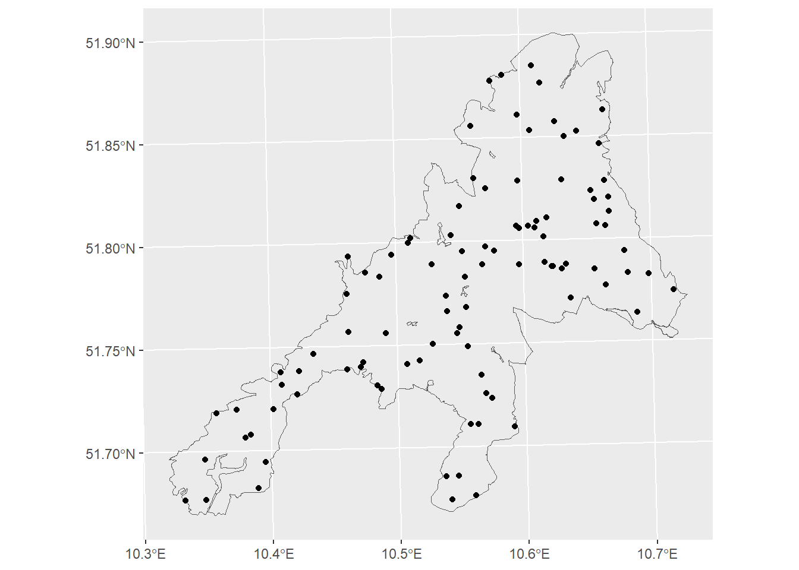
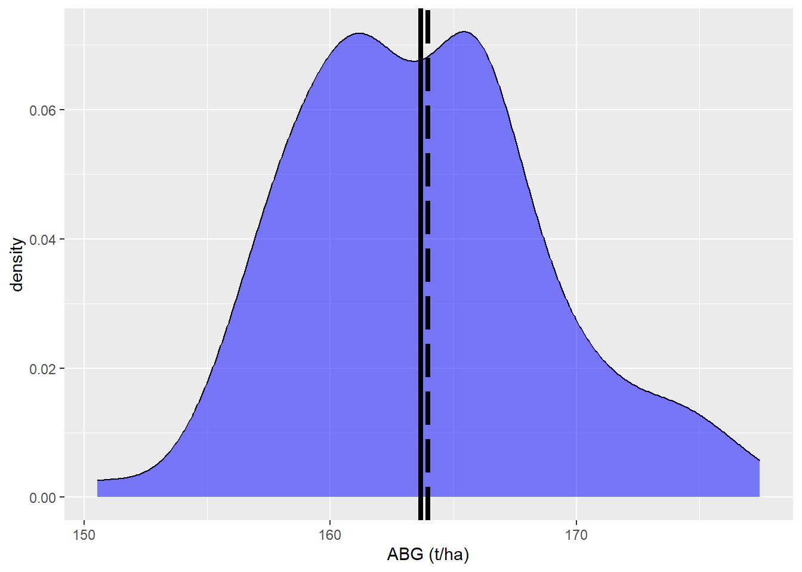
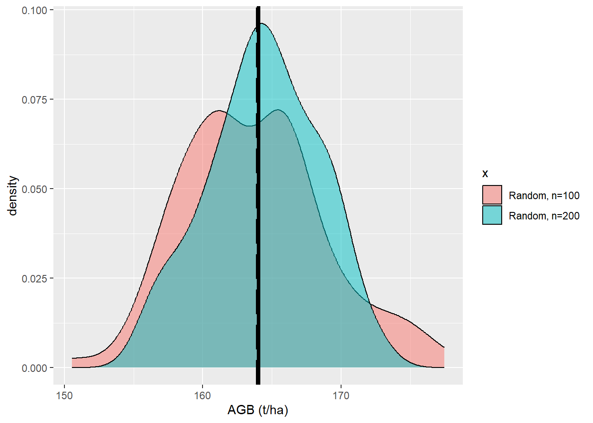
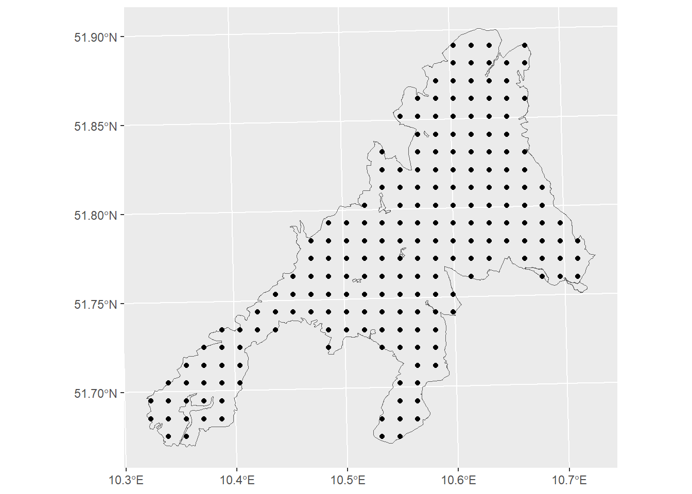
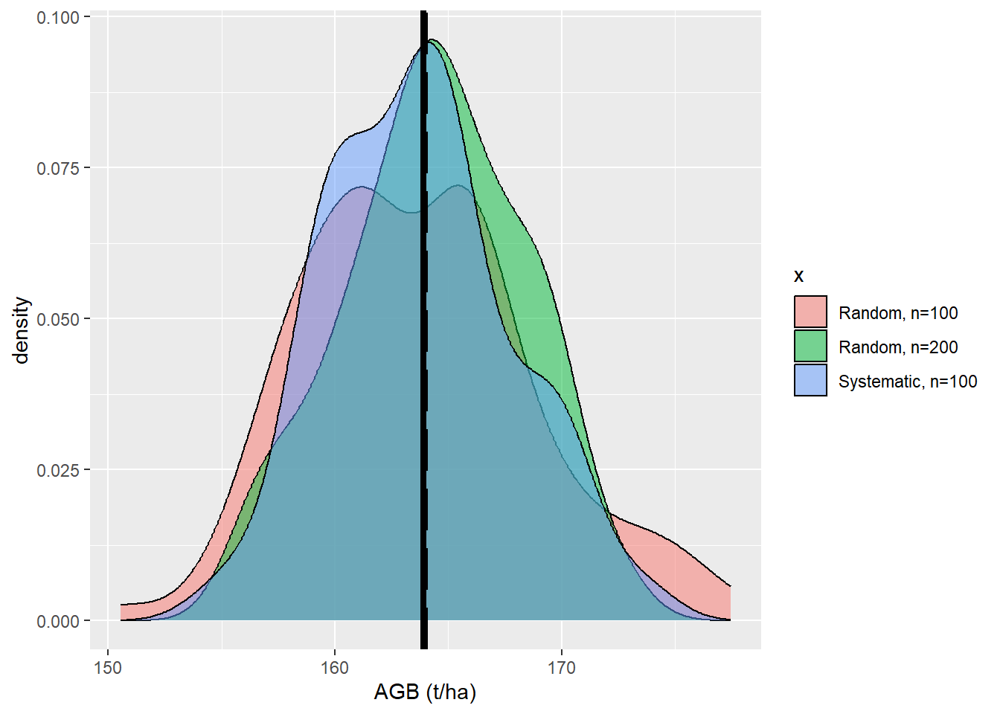

rm(list=ls())
library(sf)
library(terra)
library(ggplot2)
library(rprojroot)
data_dir=paste0(find_rstudio_root_file(),"/block1_magdon/data/")Design-based sampling in a Nutshell
Estimating Forest Attributes with Confidence
Introduction
In this tutorial, we will explore the principles of design-based sampling. We will learn how to implement statistically sound sampling designs. Furthermore, we will run some simulations to understand the properties of probability sampling. The simulation part is based on a presentation of Gerad Heuveling from Wageningen University, which he gave in the OpenGeoHub Summer School.
- Learn how to draw a spatial random sample
- Learn how to draw a systematic grid for a given area of interest
- Run a simulation to analyze the properties of the estimators
Data sets
For demonstration purposes we will work with a map of forest above ground biomass (AGB) produced by the Joint Research Center(JRC) for the European Commission Joint Research Centre (JRC) (2020) To provide a synthetic example, we will assume that this map (agb_pop) is an error-free representation of the AGB in the National Park Hart which defines our population.
Before we start, you should download the following files:
Place all files into a sub folder ‘data’ of this tutorial.
#Import the boundary of the national park
np_boundary = st_transform(st_read(paste0(data_dir,"nlp-harz_aussengrenze.gpkg"),quiet = T),25832)
agb_pop <- terra::rast(paste0(data_dir,"agb_np_harz_truth.tif"),25832)
#agb_model <-terra::rast(paste0(data_dir,"agb_np_harz_model.tif"),25832)Population Parameters
Since we assume that the map is an error-free representation we can derive the true population values.
\[ {\mu} = \frac{\sum_{i=1}^N{y_i}}{N} \]
\[ {\sigma} =\sqrt{\frac{\sum_{i=1}^N{(y_i-\mu})^2}{N}} \]
# Extract raster values and remove NAs (outside the NP)
pop_values <- values(agb_pop)
pop_values <- pop_values[!is.na(pop_values)]
# Calculate the mean and standard deviation
n <- length(pop_values)
mean_pop <- mean(pop_values)
sd_pop <- sqrt(sum((pop_values - mean_pop)^2) / n)The true population value of the mean is 163.98 t/ha and the standard deviation is 53.66 t/ha.
Sampling Approach
In real forest monitoring applications, the true population values are rarely known, as it is often not feasible or impossible to measure all elements of the population. Therefore, sampling strategies are applied to estimate the true population values.
SRS-Estimators
Depending on the sampling design (the way we select samples) the correct estimators need to be used to provide unbiased and precise estimates. The most simple estimators assume a pure random selection of samples -> Simple Random Sampling (SRS).
We can estimate the mean value \(\bar{y}\) as:
\[ \bar{y} = \frac{\sum_{i=1}^n{y_i}}{n} \]
and the standard deviation \(s\) as:
\[ {s} =\sqrt{\frac{\sum_{i=1}^n{(y_i-\bar{y}})^2}{n-1}} \]
Collect a random sample
To estimate the mean above ground in the National Park Harz, we start with a simple random sample. As common in forest inventories, we assume that our population is the infinite number of dimensionless points within the boundaries of the NP. Thus, for the sampling, random points are chosen. We start with a random sample with \(n=100\) sample points.
n=100
# Create n random points inside the boundary of the NP as a sample
p1 = sf::st_sample(np_boundary,size=n)
# Plot the samples on the map
ggplot()+geom_sf(data=np_boundary,fill=NA)+
geom_sf(data=p1)
For our simulation study, we can now extract the true AGB observations at each sample location from the map and calculate the mean across all sample points. In a real forest monitoring project, however, this is not possible. Instead, you would have to visit each selected point in the field and manually record the observations.
# Extract population and modelled values at sample locations
sample <- terra::extract((agb_pop),vect(p1))
names(sample)<-c('ID','AGB')
mean_est <- mean(sample$AGB,na.rm=T)
sd_est <- sd(sample$AGB,na.rm=T)Using the random sample we estimate the mean values \(\bar{y}\) as 149.92 and the standard deviation \(s\)§ as \(\bar{y}\) as 55.33.
| \(\bar{y}\) (t/ha) | \(\mu\) (t/ha) |
|---|---|
| 149.92 | 163.98 |
At this point, we cannot yet tell whether our estimate is unbiased. In other words: Is this result just due to chance, or would we obtain a similar estimate if we repeated the sampling with a different set of random points?
Simulation with random samples
Estimate mean values
To check if our sample based estimates are unbiased we can run a small simulation and repeat the sampling \(k\) times.
# We set a seed to ensure we can repeat the simulation
seed<- 12324
k <- 100 # 100 repetitions
n <- 100 # 100 samples per repetition
mean <- rep(0,k)
for (i in 1:k) {
#print(i)
p1 = sf::st_sample(np_boundary,size=n)
sample <- terra::extract((agb_pop),vect(p1))
names(sample)<-c('ID','AGB')
mean[i] <- mean(sample$AGB,na.rm=T)
}
df <- data.frame(y=mean, x=rep('a',k))
ggplot(data=df,aes(x=y))+
geom_density(data=df,
fill='blue', alpha=0.5)+
xlab('ABG (t/ha)')+geom_vline(xintercept=mean_pop,linewidth=1.5,
color ='black', linetype='longdash')+
geom_vline(xintercept=mean(df$y),linewidth=1.5,
color ='black')
The simulation shows two important aspects of SRS-Sampling:
1.) the true mean (\(\mu\)) and the estimated mean (\(\bar{y}\)) of the \(k\) simulation runs are almost equal. Thus, we have shown that the SRS-Estimator is unbiased!
2.) the distribution of the mean estimates over the \(k=100\) simulation runs approximates a normal distribution
Precision of estimates
The figure above shows that the estimates from samples with n=100 points vary considerably. Most estimates are close to the true population mean, but some deviate substantially—for example, values around 180 t/ha. We would expect that a sampling method producing estimates with little variation is more precise than one producing highly variable estimates. When we express the variation of the estimated means as a standard deviation, we obtain what is called the standard error \(S\) —a key statistic for assessing the precision of an estimate.
For the mean value we can express the standard error of the mean \(S_\bar{y}\) as:
\[ S_\bar{y} = \frac{S}{\sqrt{n}} \]
But how does the sample size \(n\) affects the precision?
k <- 100
n <- 200
mean_2 <- rep(0,k)
for (i in 1:k) {
#print(i)
p1 = sf::st_sample(np_boundary,size=n)
sample <- terra::extract((agb_pop),vect(p1))
names(sample)<-c('ID','AGB')
mean_2[i] <- mean(sample$AGB,na.rm=T)
}
df_2 <- data.frame(y=mean_2, x=rep('b',k))
df<-rbind(df,df_2)
ggplot(data=df,aes(x=y,fill=x))+
geom_density(alpha=0.5)+
scale_fill_discrete(labels=c('Random, n=100', 'Random, n=200'))+
xlab('AGB (t/ha)')+geom_vline(xintercept=mean_pop,linewidth=1.5,
color ='black', linetype='longdash')+
geom_vline(xintercept=mean(df$y),linewidth=1.5,
color ='black')
We see that the precision of the estimates is increased when we use more samples.
How much did the uncertainty decrease when we increase the sample size from \(n=100\) to \(n=200\)?
sd(mean)/sd(mean_2)[1] 1.295118Simulation with systematic sampling
Instead of random sampling, systematic designs are more common in forest inventories for the following reasons:
- Easy to establish and document
- Easy to communicated
- Ensures a balanced spatial coverage
- Result in conservative estimates of the precision
For the simulation we repeat the same steps as before but with a systematic sample:
# Create n systematically distributed points as a sample
p2 = sf::st_sample(np_boundary,size=n,type='regular')
ggplot()+geom_sf(data=np_boundary,fill=NA)+
geom_sf(data=p2)
Aggain we can simulated \(k=100\) repetitions of sampling with \(n=100\) and \(n=200\) regular points, to check if the estimates are unbiased and to analyse the effect of sample size.
k <- 100
n <- 100
mean_3 <- rep(0,k)
for (i in 1:k) {
#print(i)
p2 = sf::st_sample(np_boundary,size=n,type='regular')
sample <- terra::extract((agb_pop),vect(p2))
names(sample)<-c('ID','AGB')
mean_3[i] <- mean(sample$AGB,na.rm=T)
}
df_3<- data.frame(y=mean_3, x=rep('c',k))
df<-rbind(df,df_3)
ggplot(data=df,aes(x=y, fill=x))+
geom_density(alpha=0.5)+
scale_fill_discrete(labels=c('Random, n=100', 'Random, n=200','Systematic, n=100'))+
xlab('AGB (t/ha)')+geom_vline(xintercept=mean_pop,linewidth=1.5,
color ='black', linetype='longdash')+
geom_vline(xintercept=mean(df$y),linewidth=1.5,
color ='black')